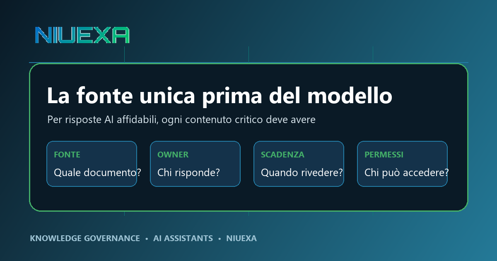
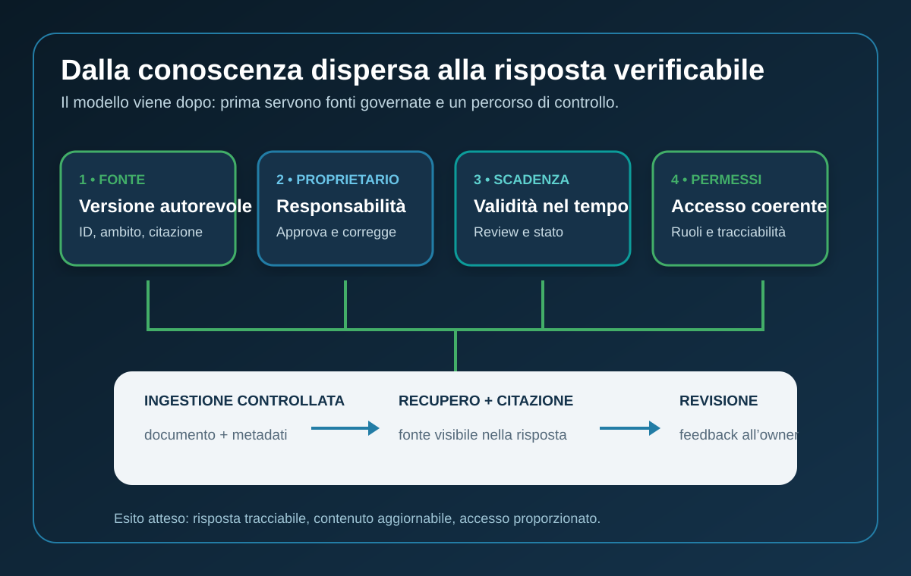

Risposta rapida: che cos’è una fonte unica per un assistente AI?
Una fonte unica è la versione autorevole di un contenuto aziendale: la procedura, policy, scheda prodotto o regola che deve prevalere quando esistono copie o interpretazioni diverse. Ha un proprietario, una data di revisione, uno stato e regole di accesso. Non significa obbligare tutta l’azienda a usare un solo archivio. Significa rendere esplicito, anche tra sistemi diversi, quale oggetto informativo decide la risposta.
Perché il modello non può correggere il caos documentale
Un assistente AI può sintetizzare velocemente ciò che recupera. Se trova tre procedure quasi identiche, però, non conosce automaticamente quale sia ancora valida. Può preferire il documento più simile alla domanda, il più recente nell’indice o quello scritto meglio, anche quando il processo aziendale considera autorevole un’altra versione.
Il problema diventa più evidente con il Retrieval-Augmented Generation (RAG). L’architettura collega il modello a documenti esterni e può mostrare citazioni, ma il recupero non trasforma una fonte debole in una fonte vera. Duplicati, metadati mancanti, accessi incoerenti e contenuti senza owner si trasferiscono nel sistema di risposta.
Per questo la domanda corretta non è soltanto “quale modello risponde meglio?”. È anche: “quale documento dovrebbe rispondere, chi ne garantisce l’accuratezza e come sappiamo che è ancora valido?”. La qualità dell’AI aziendale è in parte una proprietà del modello e in parte una proprietà del sistema organizzativo che prepara la conoscenza.
Il framework Niuexa: Fonte, Proprietario, Scadenza, Permessi

1. Fonte: quale oggetto è autorevole?
Ogni contenuto critico deve avere un identificativo e un sistema autorevole. Una copia in PDF inviata via email può essere utile per lettura, ma non dovrebbe competere con la procedura approvata nel repository ufficiale. Occorre definire ambito, versione, lingua, unità organizzativa e relazione con eventuali documenti sostituiti.
2. Proprietario: chi risponde dell’accuratezza?
L’owner non è necessariamente chi amministra SharePoint, Drive o il motore RAG. È il ruolo con competenza e autorità per approvare, correggere o ritirare il contenuto. Per una policy commerciale può essere Sales Operations; per una procedura sicurezza, il responsabile competente. Senza owner, il feedback dell’utente non ha una destinazione operativa.
3. Scadenza: quando la fonte deve essere rivista?
“Ultima modifica” non equivale a “ultima approvazione”. Un documento può essere stato toccato ieri per correggere un refuso e restare sostanzialmente obsoleto. Servono data di approvazione, prossima revisione, stato e, quando utile, evento di rinnovo: modifica normativa, cambio listino, nuovo sistema o variazione del processo.
4. Permessi: chi può consultare quale contenuto?
L’assistente deve rispettare lo stesso perimetro informativo dell’utente. Se l’indice include contenuti riservati ma il filtro autorizzativo non viene applicato al recupero, una risposta può rivelare informazioni non dovute. Se invece i permessi escludono la fonte decisiva, il sistema può produrre una risposta incompleta senza spiegare la lacuna. Accesso e tracciabilità sono parte della qualità, non un controllo successivo.
I metadati minimi per rendere una fonte utilizzabile
Non serve iniziare con un catalogo complesso. Per i contenuti che influenzano decisioni, clienti, sicurezza o conformità, un set minimo può includere:
- ID e titolo univoco: per distinguere l’oggetto dalle copie.
- Ambito: processo, paese, prodotto, pubblico e casi esclusi.
- Owner e approvatore: ruolo responsabile e percorso di escalation.
- Stato: bozza, approvato, in revisione, scaduto o ritirato.
- Date: approvazione, prossima revisione e sostituzione.
- Riservatezza: pubblico, interno, ristretto o regolato.
- Sistema autorevole: URL o riferimento al record da consultare.
- Relazioni: sostituisce, dipende da, integra o contraddice.
Questi dati consentono di filtrare prima del recupero, mostrare una citazione utile e instradare le correzioni. Permettono anche di rifiutare una risposta quando la fonte è scaduta o quando due documenti autorevoli risultano in conflitto.
Come gestire duplicati e conflitti senza bloccare il progetto
La bonifica totale dell’archivio prima di ogni pilot è spesso irrealistica. È più efficace partire dal perimetro del caso d’uso: per esempio procedure di reso, specifiche prodotto o playbook di qualificazione commerciale. Si costruisce un inventario ristretto e si classificano i documenti in quattro gruppi.
- Autorevole: può alimentare le risposte.
- Di supporto: aggiunge contesto ma non decide in caso di conflitto.
- Da revisionare: resta escluso finché l’owner non conferma.
- Ritirato: viene conservato per storico, ma non recuperato dall’assistente.
Quando due fonti approvate confliggono, il sistema non dovrebbe scegliere in silenzio. La risposta corretta può essere una escalation: mostrare il conflitto, indicare le versioni e inviare il caso all’owner. La capacità di non rispondere è un requisito di affidabilità.
Un piano operativo in 30 giorni
Settimana 1 — Scegliere il dominio
Definisci utenti, domande frequenti, decisioni supportate e danno potenziale di una risposta errata. Seleziona un dominio abbastanza stretto da essere governabile e abbastanza frequente da generare apprendimento.
Settimana 2 — Inventariare e assegnare
Raccogli le fonti candidate, rileva duplicati e assegna owner e stato. Escludi ciò che non ha provenienza chiara. Definisci i permessi usando ruoli esistenti, evitando eccezioni manuali non tracciate.
Settimana 3 — Indicizzare e testare
Configura il recupero usando soltanto fonti ammesse. Prepara domande normali, casi limite, richieste fuori perimetro e conflitti intenzionali. Verifica non solo la risposta, ma anche citazione, versione, accesso e comportamento quando manca una fonte valida.
Settimana 4 — Chiudere il ciclo di feedback
Ogni segnalazione deve diventare un ticket collegato a risposta, fonte e owner. Definisci tempo di correzione, reindicizzazione e retest. Il pilot è pronto a crescere quando l’organizzazione sa correggere il sistema, non quando la prima demo appare convincente.
KPI per misurare conoscenza e risposte
- Copertura governata: quota delle fonti critiche con owner, stato e revisione validi.
- Conflitti aperti: numero e anzianità delle contraddizioni tra fonti autorevoli.
- Risposte citabili: quota delle risposte per cui l’utente può aprire la fonte corretta.
- Ricerche senza esito: domande per cui non esiste una fonte ammessa sufficiente.
- Errori di accesso: fonti dovute ma non recuperabili, oppure contenuti non dovuti esposti.
- Tempo di correzione: intervallo tra segnalazione, aggiornamento della fonte e retest.
Un punteggio di gradimento da solo non basta. Una risposta può sembrare chiara e restare sbagliata. I KPI devono collegare esperienza utente, provenienza del contenuto e capacità dell’organizzazione di correggere l’errore.
Fonti e perimetro
Questa guida sviluppa il post LinkedIn pubblicato da Gregor Maric il 27 luglio 2026 sul problema delle fonti discordanti negli assistenti AI aziendali.
Il framework Fonte, Proprietario, Scadenza e Permessi è una guida operativa Niuexa. È coerente con il NIST AI Risk Management Framework, che tratta governance, documentazione, responsabilità e gestione continua del rischio, e con il NIST Generative AI Profile, che include tra i rischi la confabulazione e l’integrità delle informazioni.
La configurazione concreta deve essere adattata a settore, dati, sistemi, obblighi normativi e impatto delle decisioni. Questa guida non sostituisce valutazioni legali, privacy o cybersecurity.
FAQ sulla fonte unica per assistenti AI
Che cosa significa fonte unica?
Che per ogni contenuto critico esiste una versione autorevole, identificabile e governata. Le fonti possono restare in sistemi diversi.
Il RAG elimina automaticamente duplicati e documenti obsoleti?
No. Recupera ciò che trova nell’indice. Metadati, filtri, stati e ownership servono a escludere contenuti non validi.
Quali metadati sono indispensabili?
ID, ambito, owner, approvazione, revisione, stato, riservatezza e riferimento al sistema autorevole.
Chi deve possedere la fonte?
Il ruolo competente sul contenuto e autorizzato ad approvarlo o ritirarlo; non necessariamente l’amministratore tecnico.
Come misuro il miglioramento?
Copertura delle fonti governate, citazioni verificabili, conflitti aperti, ricerche senza esito, errori di accesso e tempo di correzione.